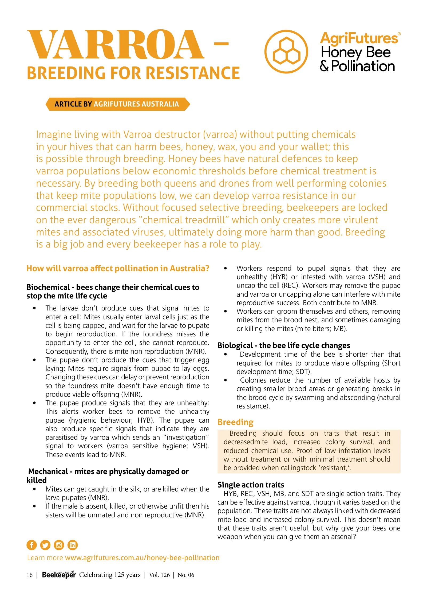

How will varroa affect pollination in Australia?
Biochemical - bees change their chemical cues to
stop the mite life cycle
•
The larvae don’t produce cues that signal mites to
enter a cell: Mites usually enter larval cells just as the
cell is being capped, and wait for the larvae to pupate
to begin reproduction. If the foundress misses the
opportunity to enter the cell, she cannot reproduce.
Consequently, there is mite non reproduction (MNR).
•
The pupae don’t produce the cues that trigger egg
laying: Mites require signals from pupae to lay eggs.
Changing these cues can delay or prevent reproduction
so the foundress mite doesn’t have enough time to
produce viable offspring (MNR).
•
The pupae produce signals that they are unhealthy:
This alerts worker bees to remove the unhealthy
pupae (hygienic behaviour; HYB). The pupae can
also produce specific signals that indicate they are
parasitised by varroa which sends an “investigation”
signal to workers (varroa sensitive hygiene; VSH).
These events lead to MNR.
Mechanical - mites are physically damaged or
killed
•
Mites can get caught in the silk, or are killed when the
larva pupates (MNR).
•
If the male is absent, killed, or otherwise unfit then his
sisters will be unmated and non reproductive (MNR).
ARTICLE BY AGRIFUTURES AUSTRALIA
Imagine living with Varroa destructor (varroa) without putting chemicals
in your hives that can harm bees, honey, wax, you and your wallet; this
is possible through breeding. Honey bees have natural defences to keep
varroa populations below economic thresholds before chemical treatment is
necessary. By breeding both queens and drones from well performing colonies
that keep mite populations low, we can develop varroa resistance in our
commercial stocks. Without focused selective breeding, beekeepers are locked
on the ever dangerous “chemical treadmill” which only creates more virulent
mites and associated viruses, ultimately doing more harm than good. Breeding
is a big job and every beekeeper has a role to play.
•
Workers respond to pupal signals that they are
unhealthy (HYB) or infested with varroa (VSH) and
uncap the cell (REC). Workers may remove the pupae
and varroa or uncapping alone can interfere with mite
reproductive success. Both contribute to MNR.
•
Workers can groom themselves and others, removing
mites from the brood nest, and sometimes damaging
or killing the mites (mite biters; MB).
Biological - the bee life cycle changes
•
Development time of the bee is shorter than that
required for mites to produce viable offspring (Short
development time; SDT).
•
Colonies reduce the number of available hosts by
creating smaller brood areas or generating breaks in
the brood cycle by swarming and absconding (natural
resistance).
Breeding
Breeding should focus on traits that result in
decreasedmite load, increased colony survival, and
reduced chemical use. Proof of low infestation levels
without treatment or with minimal treatment should
be provided when callingstock ‘resistant,’.
Single action traits
HYB, REC, VSH, MB, and SDT are single action traits. They
can be effective against varroa, though it varies based on the
population. These traits are not always linked with decreased
mite load and increased colony survival. This doesn’t mean
that these traits aren’t useful, but why give your bees one
weapon when you can give them an arsenal?
BREEDING FOR RESISTANCE
Learn more www.agrifutures.com.au/honey-bee-pollination
16 |
Celebrating 125 years | Vol. 126 | No. 06